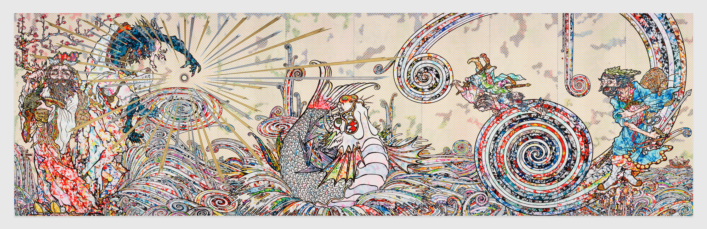
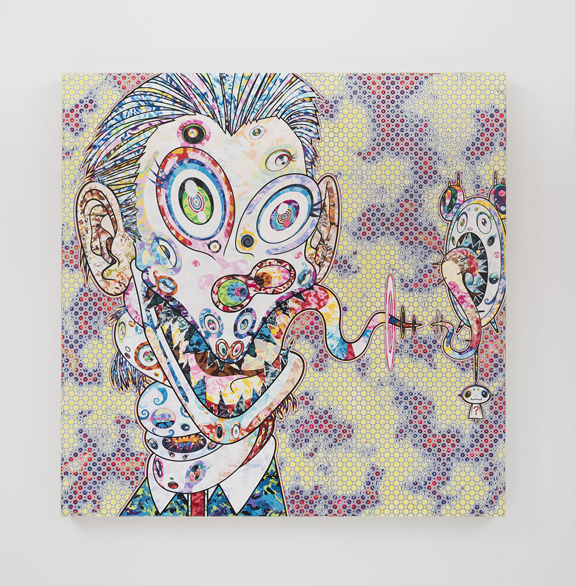
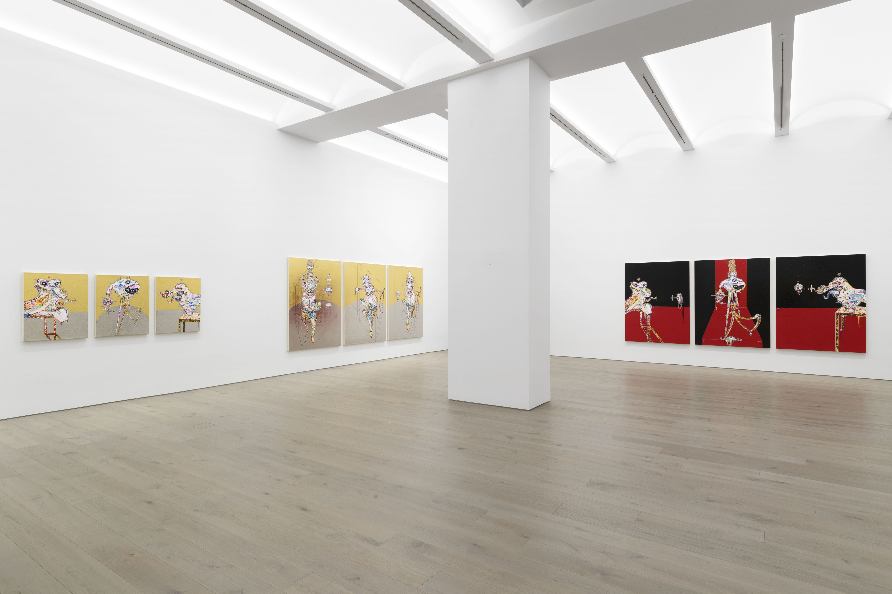

Takashi Murakami is a contemporary Japanese artist. Similar to how Andy Warhol had his Factory, Murakami operates from his studio and company, Kaikai Kiki Co., Ltd which has locations in New York, Los Angeles and Tokyo. He makes large-scale paintings and sculptures, showing the work in numerous museum and gallery exhibitions all over the world in venues such as the Brooklyn Museum, Guggenheim Museum Bilbao, amongst others. Here, he talks about his relationship to art history, image-making and what may, or may not define madness on the occasion of his new three-floor exhibition titled, ”HEADS↔HEADS” at Galerie Perrotin in New York. The exhibition presents a new series of paintings inspired by the work of Francis Bacon.
Editor’s note: This interview is part of a series on creative anxiety.
From a conversation with Katy Diamond Hamer
May 30, 2018
What inspires your choices of color before arriving at a finished project? Do you always make preparatory drawings first?
I usually draw from my past work regarding color and shapes, but with the recent Bacon paintings, I’m inspired by the original painting he made, so at first I tried to imitate it and then I would get confused and not be sure how to proceed. I would apply paint to the surface and then sand it down to experiment with different colors so it’s a little different and there is no set way at arriving at the final colors—but mainly, I choose based on my past works.
In most of your paintings there are elements, such as the smiling flowers, happy motifs and yet I find that the work is actually quite dark. You’re dealing with the darkness of commercialism, or the darkness of natural disaster and I was wondering if you could talk about that—the way the viewer is welcomed into the world that you create but then they discover another layer of existence, unexpected, within that world.
The otaku, geek people like myself, look at the world in a very simple, slanted way, so there’s darkness to it already from that point of view. For example, in George Lucas’ Star Wars Episode III, Anakin Skywalker is completely burned up and he’s like a little worm, squirming, his limbs gone. He then turns into Darth Vader. So for the otaku mindset, there is that kind of dark world view and it naturally oozes out of me. My flower paintings are very popular and I receive many commissions for this work. To be honest, I can get bored so I need to step away and look for other things to be inspired by before returning to the flowers.
Takashi Murakami, from HEADS↔HEADS, Courtesy of Perrotin. © 2018 Takashi Murakami/Kaikai Kiki Co., Ltd. All Rights Reserved.
I’m a fan of Francis Bacon and his work, specifically the portrayal of his relationship to George Dyer, a former lover and a subject in many of his works. Dyer passed away from an overdose and it haunted Bacon. Since George Dyer is one of the subjects you’ve recreated in your paintings, can you say if he was of interest to you?
I first made a work in homage to Bacon, imitating his painting with my character Mr. DOB. I couldn’t imagine myself drawing human faces at that time (which you can see of version of in the show at Galerie Perrotin). My generation of artists is, of course, Post-Pop Art. Jasper Johns’ work was about not creating his own subject or imagery, so in order to not create his own image, Jasper Johns painted flags. Warhol used the image of Marilyn Monroe and later on people used an existing poster, framed it and called it art. It’s really about not actively creating imagery.
I approached this coming from a background of cute Japanese kawaii culture and that first homage to Bacon was really well received. I was always looking for shapes and forms and reasons to paint. I made two Bacon inspired paintings and then didn’t come back to the subject for four years, until the most recent work. In 2016, I was still using my avatar Mr. DOB as the figure in the work, but then I realized that maybe I didn’t need to use him. Two years ago I decided to go directly to the source and paint more of my interpretation of human figures and literal faces.
Takashi Murakami, from HEADS↔HEADS, Courtesy of Perrotin. © 2018 Takashi Murakami/Kaikai Kiki Co., Ltd. All Rights Reserved.
I actually am not that interested in his love relationships but I’ve seen the image of his [chaotic/disorganzied] studio, and my first impression was that he must have had some kind of mental illness or madness. On the contrary, my studio and staff is completely organized. It is pristine. But is that also sort of a mental illness or madness? Because if something is out of order I can’t function. So in both cases comparing Bacon and myself, I think we are trying to externalize what’s inside our brains and after being able to do that then we can create our work. So rather than his personal life I’ve been more interested in how his brain works as an artist.
Takashi Murakami, from HEADS↔HEADS, Courtesy of Perrotin. © 2018 Takashi Murakami/Kaikai Kiki Co., Ltd. All Rights Reserved.
Your work appeals to so many people, which is something that I feel makes it special, but I’m curious because it also feels personal and is about your own experience as a human, as an artist as a spiritual entity in the world. Do you feel that this is true? That the work is you and you are the work?